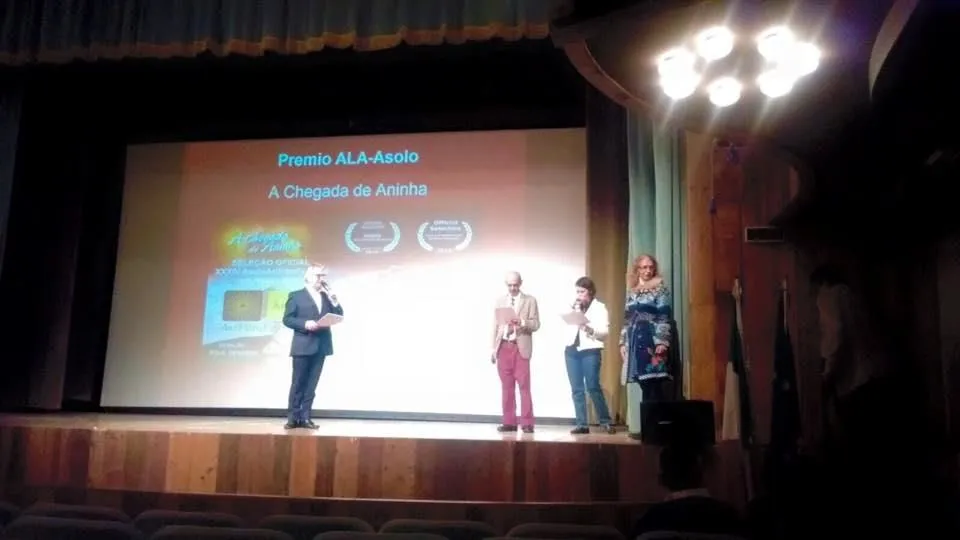

Jornal UFG: Filme de professora e estudantes da FAV é premiado
A chegada de Aninha recebeu o Prêmio Especial do Festival de Cinema e Artes de ASOLO O 34º Festival de Cinema e Artes de ASOLO (Itália), realizado […]